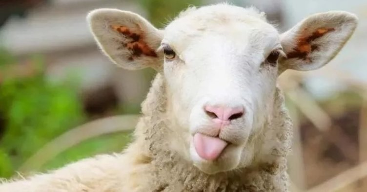

Ayetleri Iqra yazılımında görmek için metin içindeki linklere dokunun.
Adem oğullarının döktüğü ilk kan, kabul edilmeyen bir kurbanla başlamış:
Onlara Âdem'in iki oğluyla ilgili haberi hakkıyla oku. Her ikisi birer kurban sunmuşlardı, birinden kabul edilmiş, diğerinden kabul edilmemişti. (Kurbanı kabul edilmeyen) "Seni öldüreceğim" dedi. Diğeri ise "Allah, yalnız kendisinden korkanlardan kabul eder" dedi.
Çok farklıydı Adem babamızın devri: Allah, kabul ettiği kurbanı bir yıldırım ile kül ediyor ve Celalini böyle gösteriyordu. Dayanması zor olan bu uygulama sonradan kaldırıldı, kurbanımızın kabul edildiğini bilmiyoruz ama öyle umuyoruz.
Peygamber Efendimize, salat ve selam ona, Kevser'in verildiğini haber veren kısacık surede kurban emri çok açık:
Rabbin için Namaz kıl ve kurban kes.
Et fabrikada yapılmaz, ağaçta yetişmez. Yediğimiz etler
kesilen bir canlının parçasıdır. Bunu çocuklarımıza öğretmeliyiz ki et tüketiminde dikkatli davransınlar, israf etmesinler. Kurban bize bu şuuru kazandırdığı için de önemli. Marketten aldığımız etler fabrikadan değil, bu sevimli hayvanlardan geliyor.

Yılda bir kere et yiyebilen insanlar az değil... Onları düşünerek kurban ibadetine önem vermeli, her yıl şu niyetle kurban kesmeli ve muhtaçlara dağıtmalıyız:
"Şüphesiz benim namazım, kurbanım, hayatım ve ölümüm âlemlerin Rabbi Allah içindir."
Kurban, Hz Muhammed'in icat ettiği bir yenilik değildir. Namaz, oruç, umre ve hac gibi, kurban da çok önceden, Hz Adem zamanından beri uygulanan köklü bir geleneğe dayanır:
Her ümmete kurban kesmeyi gerekli kıldık ki kendilerine rızık olarak verdiği hayvanlar üzerine Allah’ın adını ansınlar!
Her olayın ve sözün dikkatle kaydedildiği Veda haccında, Efendimizin kendi eliyle 63 adet kurban kestiğini biliyoruz. "Ne gerek vardı, bir tane yetmez miydi?" itirazını duyar gibiyim. Yetmezdi, çünkü doyurulması gereken on binlerce insan toplanmıştı Mina'da. Elbette zenginler kesecekti ki yoksul çoğunluk bundan faydalansın. Emin olun ki o kurbanların bir gramı bile ziyan edilmemiştir.
1970'lerde Mekke’de durum farklıydı: Soğutma ve nakliye imkanları yeterli olmadığı için binlerce kurbanın israf edildiğini, toprağa gömüldüğünü duyar ve üzülürdük. Geçen 50 yılda durum değişti, artık hacda kesilen kurbanlar doğru yerini buluyor.
Bu vesile ile, hacca gidenlerin kurban kesme zorunluğu olmadığını hatırlatalım. Hac ile umreyi birleştirenler için kurban şart, sadece hacca niyetlenen büyük çoğunluk hacda kurban kesmiyor.
Hac ve umreyi Allah için tamamlayın ... her kim hacca kadar umre ile sevab kazanmak isterse, kolayına gelen bir kurban gerekir.
Sonuçta neyin önemli olduğunu yine Kitap söylesin:
Elbette onların etleri ve kanları Allah'a ulaşmayacaktır. Ancak O'na sizin takvanız erecektir. Onları bu şekilde sizin buyruğunuza verdi ki, size yolunu gösterdiğinden dolayı, Allah'ı tekbir ile yüceltesiniz.
Hangi tekbir? Tavafa başlarken, cemrelere taş atarken, kurbana bıçağı çalarken dile gelen tekbir:
Bismillâh Allâhu ekber
... ve teşrik (aydınlatma) tekbirleri:
Allâhu ekber, Allâhu ekber
Lâ ilâhe illallâhu vallâhu ekber
Allâhu ekber, velillâhil-hamd
Kurban bayramlarında hatırlanması gereken bir hadis:
"Hiç bir kul, kurban günü, Allah indinde kan akıtmaktan daha
sevimli bir iş yapamaz. Öyle ise, onu gönül hoşluğu ile ifa edin."
(Tirmizi, 827)